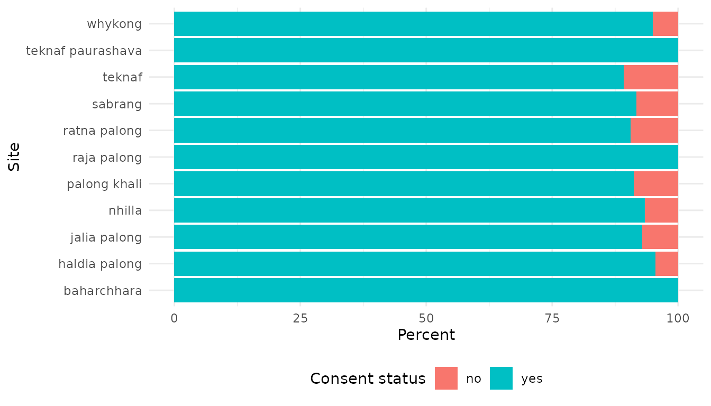

The Shiny interface included in the High Frequency Checks package is a usefull tool to beggin to familiaralised with the functions included in the package. But, as with the examples included in the vignettes so far, it shows the functions used with predifined parameters and on the main part of a survey (not including the potential loops).
lets see how we could do more with the same functions.
It could be useful to run some of the functions available on the individual loops to ensure the data collected there is also valid. The main interesting functions to run there would be:
To be able to run the functions on the loops and generating useful reports, we should first having the enumerator ID information included in the dataset generated by the loop. let assume the main part of the survey is a file named ‘main.csv’ and the loop a file named ‘loop.csv’
## First import the datasets
main <- read.csv("main.csv", stringsAsFactors = F)
loop <- read.csv("loop.csv", stringsAsFactors = F)
## then bring the enumerator ID information into the loop dataset
loop <- dplyr::inner_join(main[,c("enumerator_id","X_uuid","X_index")],
loop,by=c("X_index"="X_parent_index"))
## Now it is possible to run the HFC functions and still having the enumerator ID information for the
## potential mistakes
## Example with the surveyOtherValues function
list[var1,reportsurveyOtherValues,textsurveyOtherValues,graphsurveyOtherValues] <-
surveyOtherValues(ds=loop,
enumeratorID="enumerator_id",
otherPattern="_other$")
print(reportsurveyOtherValues)Some of the functions include an option to determine if we want to have the check reported by enumertor (useful to be able to ask them some follow-up questions to clarify the validity of the data), or not, which will give the results aggregated for the whole dataset (useful to be able to prepare the cleaning log for example).
This opportunity is given with the following functions:
## Loading required package: gsubfn## Loading required package: proto
library(knitr)
## Example on the dataset included in the package
main <- sample_dataset
## Example with the surveyOtherValues function
## First without the enumerator ID information
list[var1,reportsurveyOtherValues,textsurveyOtherValues,graphsurveyOtherValues] <-
surveyOtherValues(ds=main,
enumeratorID="enumerator_id",
otherPattern="_other$",
enumeratorCheck = FALSE)
kable(head(reportsurveyOtherValues))| field | values | nb |
|---|---|---|
| consent_received.wash.water_collection_problem_other | The source is only available some month of the year | 1 |
| consent_received.wash.water_collection_problem_other | They have to collect water from neighbors. | 1 |
| consent_received.shelter_nfi.non_food_items_other | chair-table | 1 |
| consent_received.shelter_nfi.non_food_items_other | Cow, goat | 1 |
| consent_received.shelter_nfi.non_food_items_other | Dressmaking machine | 1 |
| consent_received.shelter_nfi.non_food_items_other | Electric fan | 1 |
## Then with the enumerator ID information
list[var1,reportsurveyOtherValues,textsurveyOtherValues,graphsurveyOtherValues] <-
surveyOtherValues(ds=main,
enumeratorID="enumerator_id",
otherPattern="_other$",
enumeratorCheck = TRUE)
kable(head(reportsurveyOtherValues))| field | enumerator_id | values | nb |
|---|---|---|---|
| consent_received.wash.water_collection_problem_other | 18 | The source is only available some month of the year | 1 |
| consent_received.wash.water_collection_problem_other | 4001 | They have to collect water from neighbors. | 1 |
| consent_received.shelter_nfi.non_food_items_other | 3 | Ten | 1 |
| consent_received.shelter_nfi.non_food_items_other | 12 | Home repair materials | 1 |
| consent_received.shelter_nfi.non_food_items_other | 12 | need electricity | 1 |
| consent_received.shelter_nfi.non_food_items_other | 12 | Water pamp,laptop | 1 |
The purpose of the High Frequency Checks is to assess the quality of the data collected on a periodic basis. But you may not want to re-run all the checks on the full dataset as it may be difficult to identify the new mistakes or questions to be raised.
A good way to avoid this is to subset the dataset according of the data collection day.
library(HighFrequencyChecks)
library(knitr)
main <- read.csv("main.csv", stringsAsFactors = F)
previousMain<- read.csv("previousMain.csv", stringsAsFactors = F)
## Subset the dataset according of the date of submission to the kobo server
mainOfTheDay <- subset(main,
stringi::stri_datetime_format(strptime(Header$X_submission_time,
"%Y-%m-%dT%H:%M:%OS"),
"uuuu-MM-dd")==Sys.Date())
## Run the HFC functions on the subsetted dataset
list[var1,reportisInterviewCompleted,textisInterviewCompleted,graphisInterviewCompleted] <-
isInterviewCompleted(ds=mainOfTheDay,
dates=c("survey_start","end_survey"),
surveyConsent="survey_consent",
deleteIsInterviewCompleted=TRUE)
if(!is.null(var1)){
mainOfTheDay<-var1
}
# (more or less all the is..., survey... functions)
## Run some other functions on the full dataset (composed by the surveys collected before today, and the
## surveys collected today just processed by HFC)
fullMain <- rbind(previousMain, mainOfTheDay)
list[var1,reportassessmentDuration,textassessmentDuration,graphassessmentDuration] <-
assessmentDuration(ds=main,
dates=c("survey_start","end_survey"))
# (more or less all the assessment..., enumerator... functions)
## At the end and especially if you set-up the is... functions to have an action on the dataset,
## you should save it in order to reuse it the next day and still have an accurate tracking sheet (for
## example)
write.csv(fullMain, "previousMain.csv")Even if functions have a pre-defined purpose, it is possible to imagine using them (or at least some of them) to generate a different report. For example we could be interested by knowing the percentage of consentment for the survey according to the different site where we are doing the data collection. It could be useful to highlight some difference and maybe some site where people are less enclined to answer the survey (and where we may plan for contingency, like having a lower CI or higher ME, or changing the way we will analysed the data…). To do so, we can use the enumeratorSurveysConsent function asking to give us the result not by enumerator, but by site
library(HighFrequencyChecks)
library(knitr)
## Example on the dataset included in the package
## First we remove all the status which are different from 'yes' or 'no' (not eligible for example is
## not informing us on the people not willing ot answer the survey).
specificMain <- subset(sample_dataset,
survey_consent!="not_eligible")
## Running the function
list[var1,reportsiteSurveysConsent,textsiteSurveysConsent,graphsiteSurveysConsent] <-
enumeratorSurveysConsent(specificMain,
surveyConsent = "survey_consent",
enumeratorID = "union_name")
## Changing the columns names to reflect we are not dealing with enumerator ID
colnames(reportsiteSurveysConsent) <- c("Site", "no", "yes")
kable(reportsiteSurveysConsent)| Site | no | yes |
|---|---|---|
| baharchhara | 0.00 | 100.00 |
| haldia palong | 4.55 | 95.45 |
| jalia palong | 7.14 | 92.86 |
| nhilla | 6.67 | 93.33 |
| palong khali | 8.86 | 91.14 |
| raja palong | 0.00 | 100.00 |
| ratna palong | 9.52 | 90.48 |
| sabrang | 8.33 | 91.67 |
| teknaf | 10.87 | 89.13 |
| teknaf paurashava | 0.00 | 100.00 |
| whykong | 5.06 | 94.94 |
## Print the graphic and changing the axis names to reflect we are not dealing with enumerator ID
print(graphsiteSurveysConsent + ggplot2::xlab("Site") + ggplot2::theme(legend.position='bottom'))